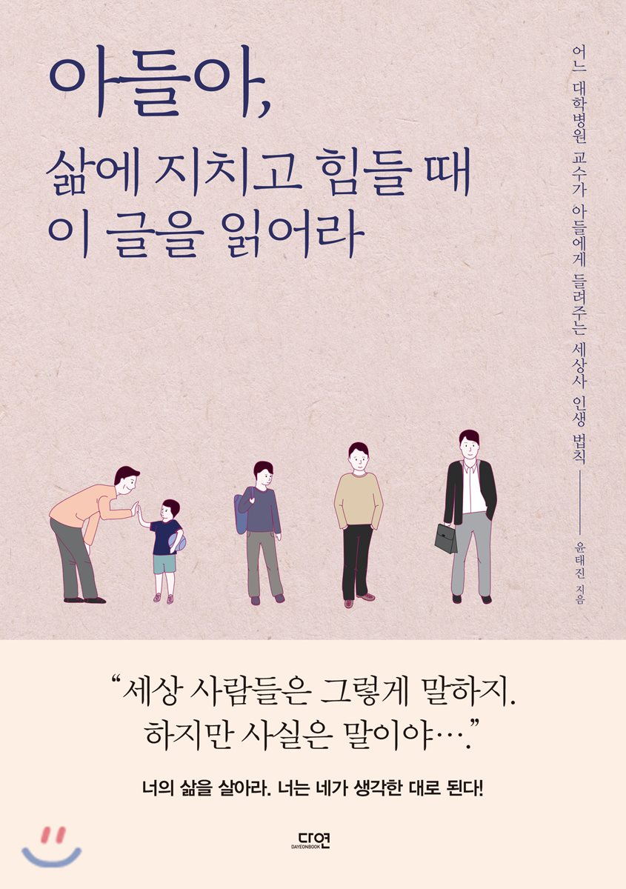

나는 나로 살기로 했다.
이 책은 우리가 온전한 ‘나’로 살아가기 위해 무엇이 필요한지 말해준다. 한창 수험생 생활 무언가에 이끌려 이책을 사서 읽었는데 꽤나 와닿았다. 소주제로는 '내게 친절하지 않은 사람에게 친절하지 않을것', '인생에서 숫자를 지울 것', '스스로에게 변명하지 않을 것', '주눅 들 만큼 겸손하지 말 것', '힘이 들 떈 힘이 든다고 말할 것', '미움받지 않기 위해 좋은 사람이 되지는 말 것'등 여러가지 주제로 독자들의 마음을 어루만져 준다. 그래서 이 책은 내가 누구인지 고민할 시간조차 없는 현대인들에게, ‘나’를 돌아보게 하는 시간을 선물하고 있다. 남처럼 사는 것이 아니라 나처럼 살 수 있도록, 진짜 ‘나’로 살기 위해 우리가 한번쯤 생각하고 고민해야 할 것들을 수록했다. 길을 잃고 있는 당신에게 가장 필요한 책, 어른이 되어서도 ‘나’를 찾고자 하는 어른아이를 위한 책, 마음의 여유가 부족하다면 한번쯤 읽어보길 권장한다!

아들아, 삶에 지치고 힘들 때 이 글을 읽어라
모든 부모들은 자식이 자신보다 나은 삶을 살길 원할 것이다. 이책은 아빠가 아들에게 들려주는 직관적인 통찰로 깨달은 세상사에 대한 이야기이다. 경험을 통해 배우는 법, 이성을 바탕으로 세상을 살아가는 법, 이성을 꿰뚫고 마음으로 세상에 대처하는 법, 이성을 회피하여 세상에 대처하는 법 등을 다루고 있는데, 어떤 이야기들은 다소 이기적이고 비인간적으로 다가올 수도 있지만 저자는 사랑하는 아들의 미래를 걱정하는 아빠의 마음으로 솔직하게 있는 그대로 이야기한다. 인생을 사는 데 도움 될 이야기를 아들에게,나아가 대한민국의 모든 청춘에게 실전적으로 들려준다. 삶을 통해 배운 저자의 세상사 인생 법칙을 마음에 새긴다면, 그래서 굳이 가지 않아도 될 길을 알게 된다면, 시행착오를 줄이고 좀 더 행복한 인생을 도모할 수 있을 것이다.